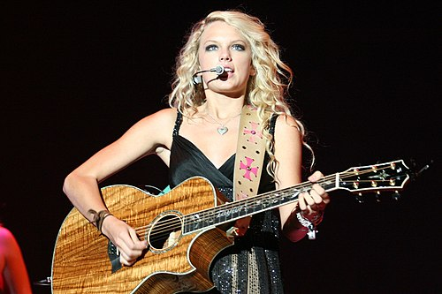

Taylor Alison Swift(West Reading, Pensilvania; 13 de diciembre de 1989) es una cantautora estadounidense. Conocida por sus composiciones autobiográficas,
su versatilidad artística y su
Swift firmó con Big Machine Records en 2005, debutando como cantante country con los álbumes Taylor Swift (2006) y Fearless (2008). Los sencillos « Teardrops on My Guitar», « Story » y « You Belong with Me» alcanzaron un gran éxito en radios country y pop. Incorporó el rock en Speak Now (2010) y la electrónica en Red (2012), recalibrando posteriormente su imagen del country al pop con el álbum de synth pop 1989 (2014); el consiguiente seguimiento mediático inspiró Reputation (2017), con influencias del hip hop. Los álbumes incluyeron los sencillos número uno del Billboard Hot 100 « We Are Never Ever Getting Back Together», « Shake It Off », « Blank Space», « Bad Blood» y « Look What You Made Me Do».
Tras pasarse a Republic Records en 2018, Swift lanzó el álbum de electropop Lover (2019) y compitió con Big Machine por los másteres, regrabando cuatro álbumes como Taylor's Version.[nota 1] Exploró estilos de indie folk en los álbumes hermanos de 2020 Folklore y Evermore, y experimentó con subgéneros pop en Midnights (2022) y el álbum doble The Tortured Poets Department (2024). A lo largo de la década de 2020, Swift alcanzó el número uno con canciones como « Cardigan», « Willow», «All Too Well», «Anti-Hero», «Cruel Summer», «Is It Over Now?» y «Fortnight». En Estados Unidos, siete álbumes de Swift han vendido un millón de copias en su primera semana, un récord. Ha realizado seis giras de conciertos, incluyendo The Eras Tour (2023-2024), la gira con mayor recaudación de todos los tiempos. Entre sus películas se incluyen Miss Americana (2020), All Too Well: The Short Film (2021) y The Eras Tour (2023), la película de concierto más taquillera.
Swift ha recibido una
| Nombre de nacimiento | Taylor Alison Swift |
|---|---|
| Nacimiento | 13 de diciembre de 1989 (35 años) West Reading, Pensilvania, Estados Unidos |
| Nacionalidad | Estadounidense |
| Religión | Cristianismo |
| Padres | Andrea Swift Scott Swift |
|---|---|
| Pareja | Travis Kelce (2023-presente) |
| Familiares | Austin Swift (hermano) Marjorie Finlay (abuela) |
| Ocupación | Cantante Compositora Productora discográfica Directora Actriz Empresaria |
|---|---|
| Años activa | 2003-presente |
| Patrimonio | Crecimiento USD 1.600 millones (2024) |
| Seudónimo | Nils Sjöberg |
| Género | Pop synth pop country rock indie pop folk |
| Instrumento | banjo guitarra piano voz ukelele |
| Discográficas | Big Machine Records (2006-2018) Republic Records (2018-presente) Taylor Swift Productions, Inc. |
| Sitio web | taylorswift.com |
| Distinciones | Ver lista anexa |
Taylor Alison Swift nació el 13 de diciembre de 1989 en West Reading, Pensilvania.[1] Lleva el nombre del cantautor James Taylor y se le dio a propósito un nombre unisex.[2][3] Su padre, Scott Kingsley Swift, era agente de bolsa de Merrill Lynch, y su madre, Andrea Gardner Swift (de soltera Finlay), trabajaba como ejecutiva de mercadotecnia de fondos mutualistas.[4] El hermano menor de Swift,
Swift pasó sus primeros años en una granja de árboles de Navidad en Pensilvania que su padre había comprado a uno de sus clientes,[10] y pasaba los veranos en la casa de vacaciones de su familia en Stone Harbor, Nueva Jersey, donde ocasionalmente interpretaba canciones acústicas en una cafetería local.[11] Es cristiana[12] y cursó preescolar en una escuela Montessori dirigida por las
A los 11 años, Swift viajó a Nashville con su madre para visitar sellos discográficos y entregar maquetas de versiones de karaoke de Dolly Parton y Dixie Chicks.[22] Fue rechazada por todos los sellos, lo que la llevó a centrarse en la composición de canciones.[23] Comenzó a aprender a tocar la guitarra a los 12 años con la ayuda de Ronnie Cremer, un reparador de computadoras y músico local que también la ayudó a escribir una canción original.[24] En 2003, Swift y sus padres comenzaron a trabajar con el representante de talentos Dan Dymtrow. Con su ayuda, Swift posó para Abercrombie & Fitch e incluyó una canción original en un CD recopilatorio de
En Nashville, Swift trabajó con compositores experimentados de
En una presentación de la industria musical en el
Big Machine Records aún estaba en pañales durante el lanzamiento en junio de 2006 del sencillo principal, « Tim McGraw», que Swift y su madre ayudaron a promocionar empaquetando y enviando copias del sencillo en CD a emisoras de radio country.[46] Pasó gran parte de 2006 promocionando a Taylor Swift con una gira de radio y apariciones en televisión; abrió el concierto de Rascal Flatts en fechas seleccionadas durante su gira de 2006,[47] como reemplazo de Eric Church.[48] Borchetta dijo que, aunque sus colegas de la industria discográfica inicialmente desaprobaron que contratara a una cantautora de 15 años, Swift aprovechó un mercado previamente desconocido: las adolescentes que escuchan música country.[46][28]
Tras «Tim McGraw», se lanzaron cuatro sencillos más entre 2007 y 2008: «Teardrops on My Guitar», «Our Song», «Picture to Burn» y «Should've Said No». Todos aparecieron en la lista Hot Country Songs de Billboard, y «Our Song» y «Should've Said No» alcanzaron el número uno. «Our Song» convirtió a Swift en la persona más joven en escribir y cantar un sencillo número uno en la lista Hot Country Songs,[49] y «Teardrops on My Guitar» fue el sencillo que la catapultó a la radio y las listas de éxitos.[50][51][52] Swift lanzó dos EP: The Taylor Swift Holiday Collection en octubre de 2007 y Beautiful Eyes en julio de 2008.[53][54] Promocionó ampliamente su álbum debut como acto de apertura de las giras de otros músicos de country en 2006 y 2007, incluidos las de George Strait,[55] Brad Paisley,[56] y Tim McGraw y Faith Hill.[57]
Swift recibió múltiples reconocimientos por Taylor Swift. Fue una de las ganadoras del premio a la compositora/artista del año de la Nashville Songwriters Association International en 2007, convirtiéndose en la persona más joven en recibir dicho título.[58] También ganó el premio Horizon de la Asociación de Música Country a mejor artista revelación,[59] el premio a la mejor vocalista femenina revelación de los Premios de la Academia de la Música Country,[60] y el premio a la artista femenina country favorita de los Premios American Music.[61] También fue nominada a mejor artista novel en la 50.ª edición de los Premios Grammy.[62] En 2008, volvió a abrir el concierto de Rascal Flatts[63] y salió brevemente con el cantante Joe Jonas.[64]
El segundo álbum de estudio de Swift, Fearless, fue lanzado en noviembre de 2008 en Norteamérica,[65] y en marzo de 2009 en otros mercados.[66] En el Billboard 200, Fearless pasó 11 semanas en el número uno, convirtiéndose en el primer álbum de Swift en encabezar la lista y el álbum country femenino número uno de mayor duración.[67] Fue el álbum más vendido de 2009 en EE. UU.[68] Su sencillo principal, «Love Story», fue su primer número uno en Australia y la primera canción country en encabezar la lista Pop Songs de Billboard,[69][70] y su tercer sencillo, «You Belong with Me», fue la primera canción country en encabezar la lista Radio Songs de todos los géneros de Billboard.[71] Otros tres sencillos fueron lanzados entre 2008 y 2010: «White Horse», «Fifteen» y «Fearless». Los cinco sencillos estuvieron entre los 10 mejores de Hot Country Songs, con «Love Story» y «You Belong with Me» encabezando la lista.[72] En 2009, Swift realizó una gira como telonera de Keith Urban y se embarcó en su primera gira como cabeza de cartel, el Fearless Tour.[73]
«You Belong with Me» ganó el premio al mejor video femenino en los MTV Video Music Awards de 2009.[74] Su discurso de aceptación fue interrumpido por el rapero Kanye West, un incidente que se convirtió en objeto de controversia y una amplia cobertura mediática.[75] Ese año, Swift ganó cinco premios American Music, incluyendo artista del año y álbum country favorito.[76] Billboard la nombró artista del año 2009.[77] Ganó el premio al video del año y al video femenino del año por «Love Story» en los CMT Music Awards de 2009, donde hizo un video parodia de la canción con el rapero T-Pain llamado «Thug Story».[78] En la 52.ª edición de los Premios Grammy, Fearless fue nombrado álbum del año y mejor álbum de country, y «White Horse» ganó el premio a la mejor canción country y a la mejor interpretación vocal country femenina.[79] En los Country Music Association Awards de 2009, Swift ganó el premio álbum del año por Fearless y fue nombrada artista del año, siendo la persona más joven en ganar tal honor.[80]

A lo largo de 2009, Swift colaboró y compuso lanzamientos de otros músicos. Participó en «Half of My Heart» de John Mayer, con quien se la relacionó sentimentalmente a finales de 2009.[81][82] Escribió «
El tercer álbum de estudio de Swift, Speak Now, se lanzó en octubre de 2010.[93] Escrito exclusivamente por Swift,[94] el álbum debutó en el Billboard 200 con más de un millón de copias vendidas en Estados Unidos en la primera semana[95] y se convirtió en el álbum digital de mayor venta de una artista femenina.[96] Speak Now contó con seis sencillos: «Mine», «Back to December», «Mean», «The Story of Us», «Sparks Fly» y «Ours». «Mine» alcanzó el número tres y fue el sencillo con mejor puntuación en el Billboard Hot 100,[97] los tres primeros sencillos llegaron al top 10 en Canadá,[88] y los dos últimos alcanzaron el número uno en Hot Country Songs.[72] Swift promocionó Speak Now con el Speak Now World Tour de febrero de 2011 a marzo de 2012[98] y el álbum en vivo
Red, el cuarto álbum de estudio de Swift, fue lanzado en octubre de 2012.[108] En Red, Swift trabajó con Chapman y nuevos productores como Max Martin, Shellback,
Red y su sencillo «Begin Again» recibieron tres nominaciones en la 56.ª edición de los Premios Grammy (2014).[116] Swift recibió los premios American Music como mejor artista femenina de country en 2012, artista del año en 2013,[117][118] y el premio al compositor/artista de la Country Music Association Awards de Nashville por quinto y sexto año consecutivo.[119] En los premios de la Asociación de Música Country de 2014, Swift fue galardonada con el premio Pinnacle, convirtiéndola en la segunda ganadora en la historia después de Garth Brooks.[120] La gira Red Tour se desarrolló desde marzo de 2013 hasta junio de 2014 y se convirtió en la gira country de mayor recaudación.[121]
Swift continuó escribiendo canciones para películas y colaborando en los lanzamientos de otros artistas. En la banda sonora de Los juegos del hambre (2012), Swift escribió y grabó «Eyes Open» y «Safe & Sound»; esta última fue coescrita con The Civil Wars y T-Bone Burnett. «Safe & Sound» ganó el premio Grammy a la mejor canción escrita para medios visuales.[122] Escribió y produjo «Sweeter Than Fiction» con Jack Antonoff para la banda sonora de Un talento increíble (2013).[123] Swift participó en «Both of Us» de B.o.B (2012)[124] y prestó su voz a «Highway Don't Care» de Tim McGraw (2013), también con la participación de Keith Urban.[125] Fue actriz de voz en The Lorax (2012),[126] hizo un cameo en la comedia New Girl (2013),[127] y tuvo un papel secundario en la película distópica The Giver (2014).[128] De 2010 a 2013, Swift estuvo involucrada sentimentalmente con el actor Jake Gyllenhaal, el heredero político Conor Kennedy y el cantante Harry Styles.[82]
En marzo de 2014, Swift comenzó a vivir en la ciudad de Nueva York, a la que atribuyó una influencia creativa en su quinto álbum de estudio, 1989.[nota 2] Describió 1989 como su primer «álbum pop oficial» y lo produjo con Jack Antonoff, Max Martin, Shellback, Imogen Heap, Ryan Tedder y Ali Payami.[131] Lanzado en octubre de 2014, el álbum abrió en la cima del Billboard 200 con 1,28 millones de copias vendidas.[132] Sus sencillos «Shake It Off», «Blank Space» y «Bad Blood» alcanzaron el número uno en Australia, Canadá y Estados Unidos, y los dos primeros convirtieron a Swift en la primera mujer en reemplazarse a sí misma en el primer puesto del Hot 100.[133] Otros sencillos incluyen «Style», «Wildest Dreams», «Out of the Woods» y «New Romantics».[134] The 1989 World Tour (2015) fue la gira de mayor recaudación del año, con 250 millones de dólares en ingresos totales.[135]
Tras publicar un artículo de opinión en The Wall Street Journal destacando la importancia de los álbumes como medio creativo para los artistas,[136] en noviembre de 2014, Swift retiró su catálogo de los servicios de streaming de música gratuita y con publicidad, como Spotify.[137] En una carta abierta de junio de 2015, Swift criticó a Apple Music por no ofrecer regalías a los artistas durante su periodo de prueba gratuito de tres meses y amenazó con retirar su música de la plataforma,[138] lo que llevó a Apple a anunciar que pagaría a los artistas durante el periodo de prueba gratuito.[139] Swift entonces acordó mantener 1989 y su catálogo en Apple Music.[140] Big Machine Records devolvió el catálogo de Swift a Spotify, entre otras plataformas de streaming gratuitas, en junio de 2017.[141]
Swift fue nombrada mujer del año por Billboard en 2014, convirtiéndose en la primera artista en ganar el premio dos veces.[142] En los Premios American Music de 2014, Swift recibió el premio inaugural Dick Clark a la excelencia.[143] En su 25.º cumpleaños en 2014, el Grammy Museum inauguró una exposición en su honor en Los Ángeles que duró hasta el 4 de octubre de 2015.[144][145] En 2015, Swift ganó el premio Brit a la artista solista femenina internacional.[146] «Bad Blood» ganó los premios video del año y mejor colaboración en los MTV Video Music Awards de 2015.[147] En la 58.ª edición de los Premios Grammy (2016), 1989 ganó álbum del año y mejor álbum de pop vocal, convirtiendo a Swift en la primera mujer en ganar álbum del año dos veces.[148]
Swift salió con el DJ Calvin Harris desde marzo de 2015 hasta junio de 2016.[149] Coescribieron la canción «This Is What You Came For», con la voz de Rihanna; Swift fue inicialmente acreditada bajo el seudónimo de Nils Sjöberg.[150] Grabó «I Don't Wanna Live Forever» con Zayn Malik para la banda sonora de Cincuenta sombras más oscuras (2017)[151] y ganó un premio de la Asociación de Música Country a la canción del año con «Better Man», que escribió para la banda Little Big Town.[152] En abril de 2016, Kanye West lanzó el sencillo «Famous», en el que hace referencia a Swift en la frase «I made that bitch famous». Swift criticó a West y dijo que nunca dio su consentimiento para la letra, pero West afirmó que había recibido su aprobación y su entonces esposa Kim Kardashian publicó videoclips de Swift y West discutiendo la canción amistosamente por teléfono. La controversia convirtió a Swift en objeto de un movimiento de cancelación en línea.[153] A fines de 2016, después de salir brevemente con Tom Hiddleston, Swift comenzó una relación de seis años con Joe Alwyn y se retiró del foco público.[154][155]
En agosto de 2017, Swift contrademandó con éxito a David Mueller, exlocutor de radio de KYGO-FM, quien la demandó por daños y perjuicios por pérdida de empleo. Cuatro años antes, informó a los jefes de Mueller que este la había agredido sexualmente tocándola en un evento.[156] Las controversias públicas influyeron en el sexto álbum de estudio de Swift, Reputation, que exploró el impacto de su fama e incorporó musicalmente el electropop con estilos urbanos de hip hop y R&B.[157] Lanzado en noviembre de 2017,[158] Reputation abrió en la cima del Billboard 200 con 1,21 millones de ventas en Estados Unidos[159] y encabezó las listas en el Reino Unido, Australia y Canadá.[160] El sencillo principal del álbum, «Look What You Made Me Do», fue el primer sencillo número uno de Swift en el Reino Unido[161] y encabezó las listas en Australia, Irlanda, Nueva Zelanda y Estados Unidos.[162] Sus sencillos «...Ready for It?», «End Game» y «Delicate» fueron lanzados a la radio pop.[163] Reputation fue nominado a un premio Grammy al mejor álbum vocal pop.[164] Swift participó en «Babe» (2018) del dúo country Sugarland.[165]
En los Premios American Music de 2018, Swift ganó cuatro premios, lo que la hizo acumular 23 trofeos en total y convertirse en la artista femenina más premiada de tales galardones, superando a Whitney Houston.[166] El mismo año se embarcó en su Reputation Stadium Tour,[167] que se convirtió en la gira de conciertos norteamericana de mayor recaudación en la historia, y recaudó 345,7 millones de dólares en todo el mundo.[168]
En noviembre de 2018, Swift firmó un nuevo contrato con Universal Music Group, que promocionó sus álbumes posteriores bajo el sello Republic Records.[169] El contrato incluía una cláusula que permitía a Swift conservar la propiedad de sus másteres. Además, en caso de que Universal vendiera parte de su participación en Spotify, se comprometía a distribuir una parte irrecuperable de las ganancias entre sus artistas.[170][171]
El primer álbum de Swift con Republic Records, Lover, fue lanzado en agosto de 2019.[172] Produjo el álbum con Antonoff, Louis Bell, Frank Dukes y
Mientras promocionaba Lover en 2019, Swift se vio envuelta en una disputa pública con el representante de talentos Scooter Braun después de que este comprara Big Machine Records, incluidos los másteres de sus álbumes que el sello había lanzado.[179] Swift dijo que había estado tratando de comprar los másteres, pero Big Machine le permitiría hacerlo solo si intercambiaba un álbum nuevo por cada uno anterior bajo un nuevo contrato, que se negó a firmar.[179] En noviembre de 2020, Swift comenzó a regrabar su catálogo anterior, lo que le permitió poseer los nuevos másteres y la licencia de sus canciones para uso comercial, sustituyéndolos por los másteres propiedad de Big Machine.[180]
En febrero de 2020, Swift firmó un contrato editorial con Universal Music Publishing Group después de que expirara su contrato de 16 años con Sony/ATV.[181] En medio de la pandemia de COVID-19 durante 2020, Swift lanzó por sorpresa dos «álbumes hermanos» que grabó y produjo con Antonoff y Aaron Dessner: Folklore en julio y Evermore en diciembre.[182] Joe Alwyn coescribió y coprodujo algunas canciones bajo el seudónimo de William Bowery.[183] Ambos álbumes incorporaron una producción de indie folk apagada;[184][185] cada uno fue respaldado por tres sencillos que atendían a los formatos de radio pop, country y triple A de EE. UU. Los sencillos fueron «Cardigan», «Betty» y «Exile» de Folklore, y «Willow», «No Body, No Crime» y «Coney Island» de Evermore.[186] Folklore fue el álbum más vendido de 2020 en EE. UU.[187] y, junto con «Cardigan», convirtió a Swift en la primera artista en debutar un álbum número uno en EE. UU. y una canción número uno en la misma semana; logró la hazaña nuevamente con Evermore y «Willow».[188]
Según Billboard, Swift fue la artista musical mejor pagada de Estados Unidos y la solista mejor pagada del mundo en 2020.[189] Folklore convirtió a Swift en la primera mujer en ganar el premio Grammy al álbum del año tres veces, ganando la categoría en la 63.ª edición de los Premios Grammy (2021).[190] En los Premios American Music, Swift ganó tres premios, incluyendo artista del año por tercera vez (2020)[191] y artista femenina favorita de pop/rock y álbum favorito de pop/rock (2021).[192] Swift interpretó a Bombalurina en la adaptación cinematográfica del musical Cats (2019) de Andrew Lloyd Webber, para la que coescribió y grabó la canción original nominada al Globo de Oro «Beautiful Ghosts».[193][194] El documental Miss Americana, que narra partes de la vida y la carrera de Swift, se estrenó en el Festival de Cine de Sundance de 2020.[195]
Las regrabaciones de Swift de sus primeros seis álbumes de estudio comenzaron con Fearless (Taylor's Version) y Red (Taylor's Version), que se lanzaron en abril y noviembre de 2021. Ambos alcanzaron la cima del Billboard 200, y el primero fue el primer álbum regrabado en hacerlo.[196] Fearless (Taylor's Version) fue precedido por la canción «Love Story (Taylor's Version)», que convirtió a Swift en la segunda artista después de Dolly Parton en tener tanto la versión original como la regrabada de una canción en alcanzar el número uno en Hot Country Songs.[197] Red (Taylor's Version) fue respaldado por «All Too Well (10 Minute Version)», que se convirtió en la canción más larga de la historia en encabezar el Hot 100.[198]
El décimo álbum de estudio de Swift, Midnights, se lanzó en octubre de 2022.[199] El álbum incorpora un sonido electropop[200] y synth pop[201] moderado con elementos de hip hop, R&B y electrónica.[199][202] En EE. UU., Midnights fue su quinto álbum en abrir en la cima del Billboard 200 con ventas en la primera semana de más de un millón de copias, y sus canciones, lideradas por el sencillo «Anti-Hero», convirtieron a Swift en la primera artista en monopolizar el top 10 del Hot 100.[203] A nivel mundial, el álbum rompió el récord de la mayor cantidad de reproducciones en un solo día y la mayor cantidad de reproducciones en una sola semana en Spotify y alcanzó la cima de las listas de al menos 14 países.[204] Los dos sencillos adicionales del álbum, «Lavender Haze» y «Karma», alcanzaron el número dos en el Billboard Hot 100.[205]
Según Billboard, Swift fue la artista solista con mayores ingresos en Estados Unidos y la artista con mayores ingresos a nivel mundial en 2021.[206][207] Ganó seis premios American Music, incluyendo el de artista del año en 2022.[208] En los MTV Video Music Awards, Swift ganó su tercer y cuarto trofeo al video del año con All Too Well: The Short Film, su cortometraje autodirigido que acompaña a «All Too Well (10 Minute Version)», en 2022[209] y «Anti-Hero» en 2023.[210] Durante este período, Swift ganó tres premios Grammy: mejor video musical por All Too Well: The Short Film[211] y mejor álbum vocal pop y álbum del año por Midnights. Swift se convirtió en la primera artista en ganar el álbum del año cuatro veces en la historia de los Grammy.[212]
Los siguientes dos álbumes regrabados de Swift, Speak Now (Taylor's Version) y 1989 (Taylor's Version), se lanzaron en julio y octubre de 2023. El primero convirtió a Swift en la mujer con más álbumes número uno (12) en la historia del Billboard 200, superando a Barbra Streisand,[213] y el segundo fue su sexto álbum en vender un millón de copias en una sola semana en EE. UU., lo que lo convirtió en la semana de ventas de álbumes más grande de su carrera.[214] El sencillo «Is It Over Now?» de 1989 (Taylor's Version) alcanzó el número uno en el Billboard Hot 100.[215] Swift participó en «Renegade» y «Birch» (2021) de Big Red Machine,[216] «Gasoline» (2021) de Haim,[217] «The Joker and the Queen» (2022) de Ed Sheeran,[218] y «The Alcott» (2023) de The National.[219] Para la banda sonora de la película La chica salvaje (2022), escribió y grabó «Carolina», que recibió nominaciones a mejor canción original en los Globos de Oro y mejor canción escrita para medios visuales en los premios Grammy.[220] Además de la música, Swift tuvo un papel secundario en la película de comedia de época Amsterdam (2022).[221]
En 2023, Swift fue la artista más reproducida en Spotify,[222] Apple Music,[223] y Amazon Music; y la primera artista en situarse en el número uno en la lista de los mejores artistas de Billboard de fin de año en tres décadas diferentes (2009, 2015 y 2023).[224] Tuvo cinco de los 10 álbumes más vendidos de 2023 en EE. UU., un récord desde que Luminate comenzó a rastrear las ventas de música en EE. UU. en 1991.[225]
En marzo de 2023, Swift se embarcó en The Eras Tour, una gira retrospectiva que abarcaba todos sus álbumes de estudio. Los medios de comunicación cubrieron ampliamente el
El undécimo álbum de estudio de Swift, The Tortured Poets Department, se lanzó el 19 de abril de 2024.[233] Encabezando las listas de éxitos a nivel mundial, el álbum rompió una serie de récords: marcó el primer álbum en acumular mil millones de reproducciones en Spotify en una semana; vendió 2,6 millones de unidades en su primera semana en Estados Unidos; convirtió a Swift en la primera artista en monopolizar el top 14 del Billboard Hot 100 y el top 10 de ARIA Charts de Australia; y pasó 17 semanas en la cima del Billboard 200, el álbum número uno de Swift que más tiempo permaneció en la lista. El sencillo principal, «Fortnight», con la participación de Post Malone, se convirtió en la duodécima canción número uno de Swift en el Hot 100.[234][235][236]
Tras la pandemia, los lanzamientos musicales, las giras y otras actividades relacionadas de Swift culminaron en una popularidad sin precedentes.[237] A partir de 2023, Swift alcanzó un éxito rotundo, aunque más dominante que antes, con el éxito de las regrabaciones, The Eras Tour, su película de concierto, Midnights, y The Tortured Poets Department, lo que incrementó significativamente su patrimonio neto.
Swift comenzó a salir con el jugador de fútbol americano Travis Kelce en 2023.[244] En enero de 2024,
Swift se ha aventurado en diversos géneros a lo largo de su carrera, y los críticos etiquetan principalmente sus canciones como pop,[nota 3] country,[nota 4] folk,[nota 5] rock,[nota 6] o alternativa.[nota 7] Sus primeras influencias musicales fueron las artistas country de los años 90 como Shania Twain, Faith Hill, LeAnn Rimes y las Dixie Chicks,[266] y los sonidos crossover country de Keith Urban que incorporan rock, pop y blues.[267] Se autoidentificó como artista country y alcanzó prominencia como cantante de country pop con sus primeros cuatro álbumes de estudio, desde Taylor Swift hasta Red.[268][269] Los álbumes presentan significantes country como banjo, banjo de seis cuerdas, mandolina, violín y un ligero acento vocal, además de melodías pop e influencias de rock;[270][271][272] Speak Now se inspira en estilos de rock como pop rock, pop punk y arena rock de los años 80.[94][273] Algunos críticos argumentaron que el country era un indicador de la composición narrativa de Swift en lugar de una dirección musical[274][275] y la acusaron de causar que la música country convencional se alejara de su sonido tradicional.[270][276]
Tras el debate crítico en torno a los estilos eclécticos de pop, rock y electrónica de Red, Swift eligió el synth pop de los años 80 como sonido definitorio de su arte e imagen pop recalibrados, inspirados en la música de Phil Collins, Annie Lennox, Peter Gabriel y Madonna.[277][278] 1989, el primer álbum en esta dirección, incorpora arreglos electrónicos que consisten en sintetizadores y cajas de ritmos.[279][269] Swift amplió la producción electrónica en sus siguientes álbumes;[280] Reputation consiste en influencias de hip hop, R&B y EDM;[157][269] y Lover presenta elementos eclécticos del country, el pop punk y el folk rock.[281] Cuando Swift abrazó una identidad pop, los críticos roqueros consideraron su movimiento como una erosión de su autenticidad como compositora de música country,[279][282][283] pero otros lo consideraron necesario para la evolución artística de Swift y la defendieron como pionera del poptimismo.[284][282]
Sus álbumes alternativos de 2020, Folklore y Evermore, exploraron los estilos indie folk e indie rock, incorporando un paisaje sonoro sutil y despojado con orquestación, sintetizadores silenciados y pads de percusión.[265][285][286] El último experimenta con estructuras de canciones variadas, compases asimétricos e instrumentos diversos.[287][288] Los críticos consideraron que los estilos indie eran una representación madura del arte de Swift como cantautora.[286] Midnights y The Tortured Poets Department incorporan un sonido synth pop minimalista y sobrio, haciendo uso de sintetizadores analógicos, bajos sostenidos y patrones simples de caja de ritmos.[289][290]
Con continuas reinvenciones musicales,[291] Swift fue descrita por Time y la BBC como un «camaleón» musical.[292][293]
Swift posee un rango vocal de mezzosoprano[298] y un timbre generalmente suave y entrecortado que la revista Rolling Stone consideró versátil.[299][300] Las reseñas de los primeros álbumes country de Swift criticaron su voz por ser débil y forzada en comparación con la de otras cantantes country femeninas.[301] A pesar de las críticas, la mayoría de los críticos apreciaron que Swift se abstuviera de corregir su tono con Auto-Tune y cómo priorizó la «intimidad sobre la potencia y los matices» para comunicar los mensajes de sus canciones a su público,[302] un estilo que se ha descrito como conversacional.[303][304] Según Powers, la característica vocal que define a Swift fue su atención al detalle para transmitir un sentimiento exacto: «la línea que se desliza hacia abajo como un suspiro de satisfacción o hacia arriba como una ceja levantada».[305]
En Red y 1989, la voz de Swift se procesa electrónicamente para acompañar la producción pop.[306][303] Su voz en Reputation y Midnights incorpora influencias de hip hop y R&B que resultan en una entrega cercana al rap que enfatiza el ritmo y la cadencia sobre la melodía.[307][296] Ella usa su voz de registro grave extensivamente en Folklore[308] y tanto su registro inferior como superior en Evermore; la musicóloga Alyssa Barca describió su timbre en el registro superior como «entrecortado y brillante» y el registro inferior como «completo y oscuro».[288]
Las reseñas en The New York Times, Variety y The Atlantic fueron más elogiosas con la voz de Swift en sus álbumes posteriores.[272][309][310][311] Ocupó el puesto 102 en la lista de las 200 mejores cantantes de todos los tiempos de la revista Rolling Stone de 2023: «Hace una década, incluirla en esta lista habría sido una decisión controvertida, pero lanzamientos recientes como Folklore, Evermore y Midnights resolvieron oficialmente la discusión».[300] Laura Snapes de The Guardian dijo que las «marcas vocales» de Swift incluyen un «grito vocal yo-yo» y un «cri de coeur climático y procesado».[312]
La fascinación de Swift por la composición musical comenzó en su infancia. Atribuyó a su madre el haberle inculcado la confianza y el interés inicial por la composición, ayudándola a prepararse para las presentaciones en clase.[314][315] Disfrutaba de las bandas sonoras de las películas de Disney y solía inventar letras cuando se quedaba sin palabras para cantarlas.[316] Sus influencias líricas incluyen a Patsy Cline, Loretta Lynn, Tammy Wynette, Dolly Parton,[19][103] Melissa Etheridge, Sarah McLachlan, Alanis Morissette,[317] Joni Mitchell,[318] y Fall Out Boy.[319] Mencionó a Paul McCartney, Bruce Springsteen, Emmylou Harris y Kris Kristofferson como modelos a seguir en su carrera por su producción musical, siempre en constante evolución.[28][320] Sus influencias literarias incluyen a los autores William Shakespeare, Nathaniel Hawthorne, F. Scott Fitzgerald,[321] y los poetas William Wordsworth, Robert Frost y Emily Dickinson;[322] la cual era una prima lejana de Swift.[323]
En The New Yorker en 2011, Swift declaró que se identifica primero como compositora: «Escribo canciones, y mi voz es solo una forma de transmitir esas letras».[28] Sus experiencias personales fueron una inspiración común para sus primeras canciones, lo que la ayudó a navegar por la vida.[324][29] Su técnica «diarística» comenzó con la identificación de una emoción, seguida de una melodía correspondiente.[325][326] En sus tres primeros álbumes de estudio, el amor, el desamor y las inseguridades, desde una perspectiva adolescente, fueron temas dominantes.[94][327] Profundizó en el tumulto de las relaciones tóxicas en Red,[328] y abrazó la nostalgia y la positividad posromance en 1989.[277] Reputation se inspiró en las desventajas de la fama de Swift,[329] y Lover detalló su comprensión del «espectro completo del amor».[330] Otros temas en la música de Swift incluyen la dinámica familiar, la amistad,[331][332] la alienación, la autoconciencia y el abordaje de la crítica, especialmente el sexismo.[315][333] A menudo hace referencia o se inspira en eventos y figuras históricas.[334] Neil McCormick, el crítico musical jefe de The Daily Telegraph, opinó que Swift es un «vehículo significativo para expresar la vida interior y las preocupaciones cotidianas de las mujeres de su generación [y más jóvenes]».[335]
Las letras confesionales de Swift recibieron críticas positivas de los críticos,[336][28][337] quienes destacaron sus vívidos detalles y su compromiso emocional, algo que encontraron poco común en la música pop,[338][339][340] aunque algunos la percibieron como una artista frágil y juvenil, una etiqueta que ella ha desafiado constantemente.[336] Los críticos también elogiaron sus composiciones melódicas; Rolling Stone describió a Swift como «una sabia en la composición de canciones con un don intuitivo para la arquitectura de verso-estribillo-puente».[341][303] NPR apodó a Swift «una maestra de lo vernáculo en sus letras»,[157] remarcando que sus canciones ofrecen compromiso emocional porque «el ingenio y la claridad de sus arreglos convierten un tema estándar en revelaciones sinceras».[303] A pesar de la recepción positiva, The New Yorker afirmó que generalmente se la retrataba «más como una técnica experta que como una visionaria dylanesca».[28] Los medios sensacionalistas a menudo especulaban y vinculaban los temas de sus canciones con sus ex amantes, una práctica que los críticos y la propia Swift criticaron por sexista.[342][343][344] Aparte de las pistas en las notas de álbum, Swift evitó hablar sobre los temas de sus canciones.[345]
En sus álbumes de 2020, Folklore y Evermore, Swift se inspiró en el escapismo y el romanticismo para explorar narrativas ficticias.[346] Impuso emociones a personajes imaginarios y arcos argumentales, lo que la liberó de la atención de la prensa sensacionalista y sugirió nuevos caminos para su arte.[325] Swift explicó que dio la bienvenida a la nueva dirección en la composición después de dejar de preocuparse por el éxito comercial.[346] Según Spin, exploró emociones complejas con «precisión y devastación» en Evermore.[347] Consequence afirmó que sus álbumes de 2020 convencieron a los escépticos de su destreza como compositora, destacando su transformación de «adolescente prodigio a una adulta segura y cuidadosa».[348]
Swift divide su estilo en tres tipos: «letras de pluma», canciones arraigadas en un poetismo anticuado; «letras de pluma estilográfica», basadas en historias modernas y vívidas; y «letras de bolígrafo de gel», que son animadas y frívolas.[349] Los fanes notaron que la quinta canción de cada álbum de Swift era la más vulnerable emocionalmente.[350] Al otorgarle el Songwriter Icon Award en 2021, la National Music Publishers' Association comentó que «nadie es más influyente a la hora de escribir música hoy en día».[351] The Week la consideró la compositora más importante de los tiempos modernos,[352] y la Nashville Songwriters Association International la nombró compositora-artista de la década en 2022.[203] Swift también ha publicado dos poemas originales: «Why She Disappeared» y «If You're Anything Like Me».[353]
La crítica ha analizado las cualidades distintivas y la profundidad temática de la composición de Swift. La crítica Kitty Empire opinó en 2024 que Swift es «una artista profundamente chapada a la antigua», cuyas canciones «cuentan una historia de forma concisa y emotiva, a menudo con un análisis meticuloso», a diferencia de la mayoría de la música pop de la época; Empire lo atribuyó a los inicios de Swift en el country.[354] Los puentes de Swift se consideran a menudo uno de los mejores aspectos de sus canciones,[355][348] lo que le valió el título de «Reina de los Puentes» de Time.[356] Mojo la describió como «una narradora aguda con un don para la metáfora extensa».[357] Los académicos la han descrito de forma diversa como poeta laureada,[358] filósofa[359] y barda.[294]
Swift atrae a grandes audiencias en el escenario,[360][361][362] cautivándolas a través de una narrativa emotiva y una entrega vocal en lugar de depender de una coreografía de baile elaborada.[363] Según Greg Krelenstein de la revista V, posee «un don excepcional para convertir un espectáculo de estadio en un ambiente íntimo», independientemente de si está «tocando una guitarra o liderando un ejército de bailarines».[364] En una reseña de 2008 de las primeras actuaciones de Swift, Sasha Frere-Jones de The New Yorker la llamó una artista «sobrenaturalmente hábil» con una presencia escénica vibrante, y agregó que «devolvió la energía del público con el profesionalismo que ha demostrado desde los catorce años».[275] En 2023, Adrian Horton de The Guardian destacó su «aparentemente infinita resistencia» en The Eras Tour,[365] y la crítica Ilana Kaplan calificó su talento para el espectáculo como «incomparable».[366]
Las producciones de los conciertos de Swift se han caracterizado por la elaborada teatralidad de Broadway y la alta tecnología,[367] y sus actuaciones incorporan con frecuencia una banda en directo, con la que ha tocado y realizado giras desde 2007.[368] Swift también suele acompañarse con instrumentos musicales como la guitarra eléctrica,[369] la guitarra acústica, el piano,[370] y a veces la guitarra de doce cuerdas,[371] el banjo de seis cuerdas,[372] o el ukelele.[373] Al interactuar con frecuencia con el público, sus actuaciones acústicas en solitario se consideran íntimas y emocionalmente resonantes, lo que complementa sus letras basadas en historias y la conexión con los fanes.[313][374] Lydia Burgham, de The Spinoff, opinó que esta intimidad sigue siendo «parte integral de sus orígenes como cantautora».[375][370] Chris Willman, de Variety, calificó a Swift como «la superestrella más accesible del pop»[376] y la intérprete más popular del siglo XXI.[377]
Swift hace hincapié en los efectos visuales como componente creativo clave de su proceso de creación musical.[378] Ha colaborado con diferentes directores para producir sus vídeos musicales y, con el tiempo, se ha involucrado más en la guionización y la dirección. Desarrolló el concepto y el tratamiento de «Mean» en 2011[379] y codirigió el vídeo musical de «Mine» con Roman White el año anterior.[380] En una entrevista, White dijo que Swift «estuvo muy involucrada en la redacción del tratamiento, el casting y el vestuario. Y se quedó los dos días de rodaje de 15 horas, incluso cuando no estaba en las escenas».[381]
Entre 2014 y 2018, Swift colaboró con el director Joseph Kahn en ocho vídeos musicales, cuatro de cada uno de sus álbumes 1989 y Reputation. Kahn ha elogiado la implicación de Swift,[382] que trabajó con American Express para el vídeo musical «Blank Space» (dirigido por Kahn) y fue productora ejecutiva de la aplicación interactiva AMEX Unstaged: Taylor Swift Experience, por la que ganó un Primetime Emmy Award for Outstanding Interactive Program en 2015.[383] Swift produjo el vídeo musical de «Bad Blood» y ganó un premio Grammy al mejor vídeo musical en 2016.[384]
A su productora, Taylor Swift Productions, se le atribuye la producción de todos sus medios visuales, comenzando con el documental de conciertos Reputation Stadium Tour de 2018.[385] Continuó codirigiendo vídeos musicales para los sencillos de Lover «Me!» con Dave Meyers, y «You Need to Calm Down» (actuando también como coproductora ejecutiva) y «Lover» con Drew Kirsch,[386] pero se aventuró por primera vez en la dirección en solitario con el vídeo de «The Man» (que le valió el MTV Video Music Award a la mejor dirección).[387] Después de Folklore: The Long Pond Studio Sessions, Swift debutó como realizadora con All Too Well: The Short Film,[203] que la convirtió en la primera artista en ganar el premio Grammy al mejor vídeo musical como directora en solitario.[388] Swift ha citado a Chloé Zhao, Greta Gerwig, Nora Ephron, Guillermo del Toro, John Cassavetes y Noah Baumbach como influencias cinematográficas.[378]
La discografía de Swift es un «cancionero aclamado por la crítica», según Sam Lansky, de Time.[389] Ha ganado 14 premios Grammy (cuatro de ellos al álbum del año, el mayor número ganado por un artista),[390] un premio Emmy,[391] 40 premios American Music (el mayor número ganado por un artista),[392] 49 Billboard Music Awards (el mayor número ganado por un artista),[393] 118 récords Guinness, 30 MTV Video Music Awards (incluidos cinco vídeos del año, la mayor cantidad ganada por un artista),[394] 12
A partir de los datos disponibles, Swift ha acumulado más de 50 millones de ventas de álbumes y 150 millones de ventas de sencillos a partir de 2019,[401][402][403] y 114 millones de unidades a nivel mundial, incluidos 78 mil millones de streams a partir de 2021.[404][405] La Federación Internacional de la Industria Fonográfica la clasificó como la Global Recording Artist of the Year por un récord de cinco veces (2014, 2019, 2022, 2023 y 2024).[406] Swift tiene el mayor número de álbumes número uno en el Reino Unido e Irlanda para una artista femenina en el siglo XXI,[407][408] obtuvo los mayores ingresos para un artista en las plataformas de música digital chinas (CN¥ 159 000 000 a partir de 2021),[409] y es la primera artista en ocupar todo el top cinco[nota 8] de la lista de álbumes australianos[412][413] y el top diez de la lista de sencillos del país.[414] Swift sigue siendo la artista de gira más taquillera de la historia, con unas ventas de entradas acumuladas de 3120 millones de dólares hasta diciembre de 2024, según
The Eras Tour es la gira más taquillera de todos los tiempos y la primera en superar los 1000 millones de dólares de ingresos.[416][228] A partir de Fearless, cada uno de sus álbumes de estudio se ha estrenado con más de un millón de unidades en todo el mundo.[417][418] Swift es la artista con más streams en Spotify[419] y la artista femenina con más streams en Apple Music.[420] En Spotify, es la única artista femenina que ha acumulado 100 000 millones de streams,[421] la única artista que ha recibido más de 250 millones y 350 millones de streams en un día (260 millones el 27 de octubre de 2023 y 380 millones el 19 de abril de 2024),[422] y fue la primera artista femenina en alcanzar los 100 millones de oyentes mensuales.[423][198] Entre sus hazañas se cuentan el mayor número de entradas y de entradas simultáneas (175 y 34 canciones) y el mayor número de números uno (5) para una solista en la lista Billboard Global 200.[424][425] Swift es la primera y única artista en ocupar los nueve primeros puestos de la lista Global 200.[424] Es la artista con más entradas (154) y más canciones entre las diez primeras (20) en la lista Global 200 excluyendo EE. UU.[424]
En Estados Unidos, Swift es la artista con más éxito del siglo XXI.[426] Billboard sitúa a Swift en el número dos de su lista de 2024 de «grandes estrellas del pop del siglo XXI»[255] y número uno en sus listas de 2025 de las «100 mejores mujeres artistas del siglo XXI».[427] así como los «mejores artistas del siglo XXI».[428] Ella había vendido más de 37,3 millones de álbumes en 2019,[403] y ese año Billboard la situó en el octavo puesto de su lista Greatest of All Time Artists Chart.[429] Doce de sus canciones han alcanzado el primer puesto en el Billboard Hot 100.[430] Es la que más tiempo ha reinado y la primera en pasar al menos 100 semanas en la cima del Billboard Artist 100 (124 semanas);[431][432] la solista con más semanas acumuladas en la cima y en la lista de los diez primeros del Billboard 200 (84 y 425);[433][434] la mujer con más números uno en el Billboard 200 (14),[435] entradas en el Hot 100 (total y una sola semana: 264 y 32),[436] debuts en el número uno (7),[nota 9] canciones entre las diez primeras (59),[430] canciones entre las cinco primeras (36),[198] éxitos en la lista Streaming Songs (9),[430] y semanas en lo más alto de la lista Top Country Albums (101);[438] y la artista con más números uno en Pop Airplay (13)[439] y Digital Songs (29).[430] Swift es la primera mujer en colocar simultáneamente cinco álbumes entre los diez primeros y once álbumes en la lista Billboard 200;[440][441] y la primera en ocupar los cuatro primeros puestos y colocar siete álbumes[nota 10] entre los diez primeros en la lista Top Album Sales.[443][444] La Recording Industry Association of America (RIAA) ha certificado 137,5 millones de unidades totales a nombre de Swift;[445] es la primera mujer en tener tanto un álbum (Fearless) como una canción («Shake It Off») certificados Diamante.[446] Swift es la única artista en la historia de Luminate que ha conseguido que siete álbumes vendan más de un millón de copias en una semana.[447][448]
Swift ha aparecido en varias listas de éxito. Time la incluyó en su lista anual de las 100 personas más influyentes en 2010, 2015 y 2019.[449] Fue una de las Silence Breakers que la revista destacó como Persona del año en 2017 por denunciar las agresiones sexuales,[450] y volvió a recibir el honor en 2023 por su dominio cultural ese año.[389] Time describió a Swift como la primera Persona del año en ser reconocida por «logros en las artes», así como la primera mujer en ser reconocida y aparecer en una portada de Persona del año más de una vez.[451][389] Recibió un doctorado honoris causa en Bellas Artes por la Universidad de Nueva York y pronunció el discurso de graduación el 18 de mayo de 2022.[203]
A Swift se le atribuye un profundo impacto en la industria musical, la cultura popular y la economía.[452][453] Domina las conversaciones culturales,[454][455] lo que ha llevado a algunas publicaciones a describirla como una «vitalidad» cultural o zeitgeist.[456][457][359] Su música, su vida y su imagen pública son puntos de atención en la cultura global de las celebridades.[291] Inicialmente un ídolo adolescente,[458] se ha hecho referencia a ella como un icono pop;[280][459] las publicaciones describen su enorme popularidad y longevidad como algo sin precedentes desde el siglo XX.[460][461] En 2013, Jody Rosen, de la revista New York, apodó a Swift la «mayor estrella pop del mundo» y opinó que la trayectoria de su estrellato ha desafiado los patrones establecidos. Rosen añadió que Swift «se mueve entre géneros, épocas, perfiles demográficos, paradigmas y tendencias», dejando a sus contemporáneos «compitiendo por el segundo puesto».[294] Los críticos consideran a Swift una rara pero exitosa combinación de los arquetipos de estrella del pop y cantautora.[462]
Los fanes de Swift son conocidos como Swifties.[227] Billboard señaló que solo unos pocos artistas han alcanzado su nivel de éxito en las listas, el reconocimiento de la crítica y el apoyo de los fanes.[463] Los álbumes de Swift, con ventas millonarias, se consideran una anomalía en la industria dominada por el streaming tras el fin de la época de los álbumes en la década de 2010.[464][465] El economista Alan B. Krueger describió a Swift como un «genio económico».[466]
Aunque los medios de comunicación la etiquetaron al principio de su carrera como «la novia de América» por su imagen de chica de al lado,[467][468] los detractores han calificado a Swift de «calculadora» y manipuladora de su imagen, una versión reforzada por su disputa con West en 2016.[469][470] Los críticos también han señalado que su vida personal y su carrera han estado sujetas a una intensa misoginia y slut-shaming,[471][472] así como al escrutinio desenfrenado de los medios y a la especulación de los tabloides.[473] Swift también ha sido víctima de numerosos robos en su casa y de acosadores, algunos de los cuales iban armados.[474][475]
El uso del avión privado de Swift ha suscitado críticas por sus emisiones de carbono.[476][477] En 2023, un portavoz de Swift declaró que había comprado más del doble de los créditos de carbono necesarios para compensar todos los viajes de giras y vuelos personales.[478][479] En diciembre de 2023, los abogados de Swift enviaron una carta de cese y desistimiento al programador estadounidense Jack Sweeney sobre el seguimiento de su avión privado, alegando acoso y riesgos de seguridad. Los medios de comunicación han informado de que la información publicada por Sweeney es una síntesis de datos disponibles públicamente.[480][481] En febrero de 2024, se informó de que Swift había vendido uno de sus dos aviones privados.[482]
Swift contribuyó a dar forma al panorama moderno de la música country,[484] habiendo extendido su éxito más allá de la anglosfera,[294][484] fue pionera en el uso de internet (Myspace) como herramienta de mercadotecnia,[27][46] e introdujo el género a una generación más joven.[485][294] Desde entonces, las discográficas de country se han interesado por fichar a cantantes jóvenes que escriben su propia música;[486] sus interpretaciones con la guitarra contribuyeron al «factor Taylor Swift»: un fenómeno al que se atribuye un aumento de las ventas de guitarras a mujeres, un sector demográfico hasta entonces ignorado.[487][488]
Según Pitchfork, Swift cambió el panorama musical con sus transiciones de género, una discografía que se adapta a los cambios culturales,[489] y Billboard señala su capacidad para popularizar cualquier sonido en la música mainstream.[490] Líricamente, al ser personal y vulnerable en sus canciones, el periodista musical Nick Catucci opinó que Swift ayudó a crear espacio para que cantantes posteriores como Billie Eilish, Ariana Grande y Halsey hicieran lo mismo.[173] Los estudiosos han destacado la sensibilidad literaria y las implicaciones poptimistas de Swift.[322][491] Se le atribuye la legitimación y popularización del concepto de «eras» de álbumes.[492][493] Swift es objeto de estudio académico y de investigación académica en los medios de comunicación.[291] Varias instituciones educativas ofrecen cursos sobre Swift en contextos literarios, culturales y sociopolíticos.[494][291]
Swift ha influido en numerosos artistas musicales y sus álbumes han inspirado a una generación de cantautores.[485][285][495] Los periodistas alaban su capacidad para reformar las prácticas de la industria y señalan que sus acciones han cambiado las políticas de streaming, han concienciado a los nuevos músicos sobre la propiedad intelectual[496][497] y han reformado los modelos de venta de entradas.[498] Diversas fuentes consideran la música de Swift un paradigma representativo de la generación del milenio;[499] Vox y The Daily Telegraph la compararon con Bruce Springsteen,[500][335] y The Times la llamó «la Bob Dylan de nuestra era».[501] Swift obtuvo el título de mujer de la década de Billboard,[502] artista de la década en los premios American Music,[503] e icono global en los premios Brit por su impacto.[405] Artistas de la talla de Madonna,[504] Stevie Nicks,[505] Jon Bon Jovi,[506] Dolly Parton,[507] y Elton John han elogiado su talento musical.[508] Carole King considera a Swift su «nieta profesional» y le dio las gracias por «llevar la antorcha adelante».[509] Springsteen la calificó de «tremenda» escritora,[510] mientras que Elvis Costello comparó la forma de componer de Swift con la de Bob Dylan,[511] y Billy Joel consideró a Swift la sucesora de The Beatles.[512]
Los medios de comunicación describen a Swift como una mujer de negocios inteligente;[513][514] en 2024, encabezó el ranking anual Power 100 de Billboard de los principales ejecutivos de la industria musical.[515] Swift es conocida por sus tradicionales lanzamientos de álbumes, que consisten en una variedad de actividades promocionales que Rolling Stone calificó como una ineludible «bonanza multimedia».[516][517] Los huevos de Pascua y los teasers crípticos se convirtieron en una práctica común en la música pop contemporánea gracias a Swift.[518] Las publicaciones describen su discografía como un «universo» musical sujeto al análisis de fanes, críticos y periodistas.[519][520][521] Swift mantiene una presencia activa en las redes sociales y una estrecha relación con sus fanes, a lo que muchos periodistas atribuyen su éxito.[522][453][523] Su equipo interno de gestión se llama 13 Management.[524]
Swift ha colaborado con muchas marcas y empresas; ha lanzado líneas de ropa con L.E.I. y Stella McCartney,[525][526] ha diseñado tarjetas de
Swift se identifica como feminista proelección,[536] y es una de las fundadoras del movimiento Time's Up contra el acoso sexual.[537] En concreto, criticó la decisión de la Corte Suprema de los Estados Unidos de poner fin al derecho federal al aborto en 2022.[538] Swift también aboga por los derechos LGBT,[539] y ha pedido la aprobación de la Ley de Igualdad, que prohíbe la discriminación basada en el sexo, la orientación sexual y la identidad de género.[540][541] Actuó durante el WorldPride Nueva York 2019 en Stonewall Inn, y ha hecho donaciones a las organizaciones LGBT Tennessee Equality Project y GLAAD.[542][543][544]
Partidaria del movimiento Marcha por nuestras vidas y de la reforma del control de armas en EE. UU.,[545] Swift critica abiertamente la supremacía blanca, el racismo y la brutalidad policial.[319][536] Tras las protestas por George Floyd, hizo donaciones al Fondo Educativo y de Defensa Legal de la NAACP y al movimiento Black Lives Matter,[546] pidió la retirada de los monumentos confederados en Tennessee,[547] y abogó por que Juneteenth se convirtiera en una fiesta nacional.[548] Ha criticado abiertamente al presidente Donald Trump.[549] En 2020, Swift instó a sus seguidores a comprobar su registro de votantes antes de las elecciones, lo que dio lugar a que 65 000 personas se registraran para votar un día después de su publicación,[550] y apoyó a Joe Biden y Kamala Harris en las elecciones presidenciales de EE. UU. de 2020.[551] Para las elecciones de 2024, apoyó a Harris y Tim Walz.[552][553]
Swift se convirtió en multimillonaria en octubre de 2023, convirtiéndose en la primera artista musical del mundo en alcanzar ese estatus «únicamente gracias a sus canciones y actuaciones».[554][555] En junio de 2025, Forbes estimaba su patrimonio neto en 1600 millones de dólares,[556] lo que la convertía en la artista musical más rica del mundo,[557] y en una de las celebridades más acaudaladas. Anteriormente, Forbes la había nombrado la artista musical con mayores ingresos anuales en 2016, 2019, 2021 y 2022.[558] Fue la celebridad mejor pagada de 2016 con 170 millones de dólares, una hazaña reconocida por el Libro Guinness de los récords como los mayores ingresos anuales de la historia para una artista musical,[559] que ella misma superó con 185 millones de dólares en 2019.[560] En total, Swift fue incluida en la lista Forbes de artistas femeninas mejor pagadas de la década de 2010, con 825 millones de dólares.[561] También ha desarrollado una cartera inmobiliaria valorada en 150 millones de dólares a partir de 2023, con propiedades residenciales en Nashville, Nueva York, Los Ángeles (
Swift ocupó el primer puesto de la lista «Gone Good» de DoSomething en 2015,[563] y recibió la Star of Compassion de los Tennessee Disaster Services y el premio Big Help de los Nickelodeon Kids' Choice Awards por su «dedicación a ayudar a los demás» e «inspirar a otros a través de la acción».[564][565] Especialmente al principio de su carrera, Swift hizo donaciones a varios fondos de ayuda tras desastres naturales. En 2009, donó 100 000 dólares a la Cruz Roja para ayudar a las víctimas de las inundaciones de Iowa de 2008.[566] Ese mismo año, actuó en el concierto Sound Relief de Sídney, que recaudó dinero para los afectados por los incendios forestales y las inundaciones.[567] En 2011, Swift utilizó un ensayo general de su gira Speak Now como concierto benéfico para las víctimas de los tornados en EE. UU., recaudando más de 750 000 dólares.[568] En respuesta a las inundaciones de Tennessee de mayo de 2010, donó 500 000 dólares.[569] En 2009, Swift cantó en el concierto Children in Need de la BBC y recaudó 13 000 libras para la causa.[570] En 2016, donó un millón de dólares a las labores de socorro por las inundaciones de Luisiana y 100 000 dólares al Dolly Parton Fire Fund.[571][572] Swift donó al banco de alimentos después de que el huracán Harvey azotara Houston en 2017.[573] Swift donó un millón de dólares para el alivio del tornado de Tennessee en 2020 y de nuevo en 2023,[574][575] así como cinco millones de dólares para las labores de ayuda después del huracán Helene y el huracán Milton en 2024.[576]
Swift también ha hecho donaciones a la investigación contra el cáncer. Como galardonada con el premio al artista del año de la Academia de la Música Country en 2011, Swift donó 25 000 dólares al St. Jude Children's Research Hospital de Tennessee.[577] En 2012, participó en el telemaratón Stand Up to Cancer, interpretando el sencillo benéfico «Ronan», que escribió en memoria de un niño de cuatro años que murió de neuroblastoma.[578] También ha donado 100 000 dólares a la V Foundation for Cancer Research[579] y 50 000 dólares al Hospital de Niños de Filadelfia.[580] En varias ocasiones ha hecho donaciones a sus fanes para sus gastos médicos o académicos.[581] Durante la pandemia de COVID-19, Swift hizo donaciones a la Organización Mundial de la Salud y a Feeding America[582] y apoyó a las tiendas de discos independientes.[583][584] Swift interpretó «
Es una gran defensora de las artes. Es benefactora del Salón de la Fama de Compositores de Nashville,[586] Swift ha donado 75 000 dólares al
También ha hecho donaciones puntuales. En 2007, se asoció con la Tennessee Association of Chiefs of Police para lanzar una campaña destinada a proteger a los niños de los depredadores en línea.[591] Ha donado artículos para subastas a varias organizaciones benéficas, entre ellas
Durante The Eras Tour, Swift hizo donaciones a bancos de alimentos de Florida, Arizona y Las Vegas;[598] también empleó a empresas locales durante toda la gira y dio 197 millones de dólares en primas a todo su equipo.[599][600][601] En febrero de 2024, donó 100 000 dólares a la familia de una mujer que murió en un tiroteo durante el desfile de los Kansas City Chiefs en la Super Bowl.[602][603] En diciembre de 2024, una semana antes de Navidad, Swift donó 250 000 dólares a Operation Breakthrough; los fondos se destinaron a programas de desarrollo de mano de obra, cuidado infantil y aprendizaje temprano.[604]
| Álbumes de estudio | Regrabaciones |
|---|---|
| EP | |
| Álbumes en directo | |
| Películas | Documentales |
|---|---|